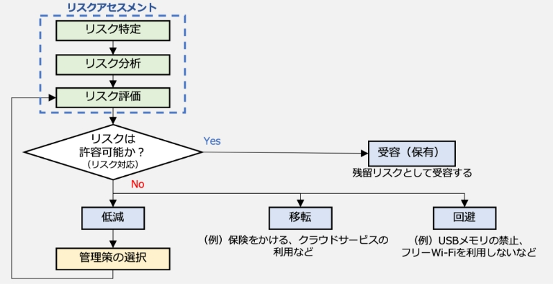

11-1-2. 情報セキュリティリスクマネジメント（ISO/IEC27005）
ISO/IEC 27005は、情報セキュリティにおけるリスクマネジメントに関する国際規格です。先に説明したISO31000と整合性がありますが、情報セキュリティに特化した内容になっています。この規格は、組織の情報資産を安全に保つことに焦点が当てられており、情報セキュリティリスクの特定、分析、評価、対応、管理、レビューなどを実施するための手引きになっています。中小企業を含むすべての組織における情報セキュリティリスクのマネジメントに有用です。
ISO/IEC 27005の情報セキュリティリスクマネジメントプロセスは、ISO 31000の一般的なリスクマネジメントプロセスに基づいており、リスクの特定、リスクの評価、リスクの対処、およびリスクの監視とコントロールに関するステップから構成されます。以下の図で示すように情報セキュリティリスクマネジメントプロセスは循環しており、反復的に実施されるものです。組織を取り巻く環境の変化や組織内の変化に応じて、新しいリスクが発生したり、既存のリスクが変化したりする上に、リスクへの対処法も進化するからです。特に、リスクマネジメントプロセスに含まれているリスクアセスメントは、リスク対応の方策や、対応の優先順位づけの前提になる重要な工程です。
図47. 情報セキュリティマネジメントプロセスの概要
（出典）ISO/IEC「ISO/IEC 27005:2022」を基に作成
リスクアセスメントからリスク対応までの流れを表す図を記載します。リスク対応を実施する過程では、「低減」「移転」「回避」「受容（保有）」の4つ選択があり、それらの選択は以下の図で示すプロセスで行われます。
図48. リスクマネジメント全体の流れと、リスク対応の選択プロセス
リスクを低減する
自社で実行できる情報セキュリティ対策を導入ないし強化することで、脆弱性を改善し、事故が起きる可能性を下げます。
リスクを受容（保有）する
事故が発生しても受容できる、あるいは対策にかかる費用が損害額を上回る場合などは対策を講じず、現状を維持します。
リスクを回避する
仕事のやりかたを変える、情報システムの利用方法を変えるなどして、想定されるリスクそのものをなくします。
（例）
- 従来は商品の発送先である住所や氏名などの個人情報を発送完了後もパソコンに保存し続けていたが、保存中の漏えいを避けるために、利用後はすぐに消去する
- インターネットバンキングに使用するパソコンでメールやウェブ閲覧をしていたが、ウイルスに感染しないようにインターネットバンキング専用のパソコンを設置し、ウイルス感染の原因となるメールやウェブ閲覧に利用せず、USBメモリ、外付けHDDも接続を禁止する
また、リスクレベルが大きく自社の対策だけでは不十分であったり、多額の費用がかかり、実施できなかったりする場合は「リスクの移転」を検討します。
リスクを移転する
自社よりも有効な対策を行っている、あるいは補償能力がある他社のサービスを利用することで自社の負担を下げます。
（例）
- 商品を販売するウェブサイトではクレジットカード番号を非保持化し、代金の決済はセキュリティ対策を十分行っている外部の決済代行サービスに変更する
- 社内のサーバで運用していた業務システムをセキュリティ対策の充実した外部クラウドサービスに移行する
- 情報漏えい、システム障害などの事故発生に伴う損失に対して保険金が支払われる情報セキュリティに関連した保険商品に加入する
（出典）IPA 「中小企業の情報セキュリティ対策ガイドライン第3.1版」を基に作成